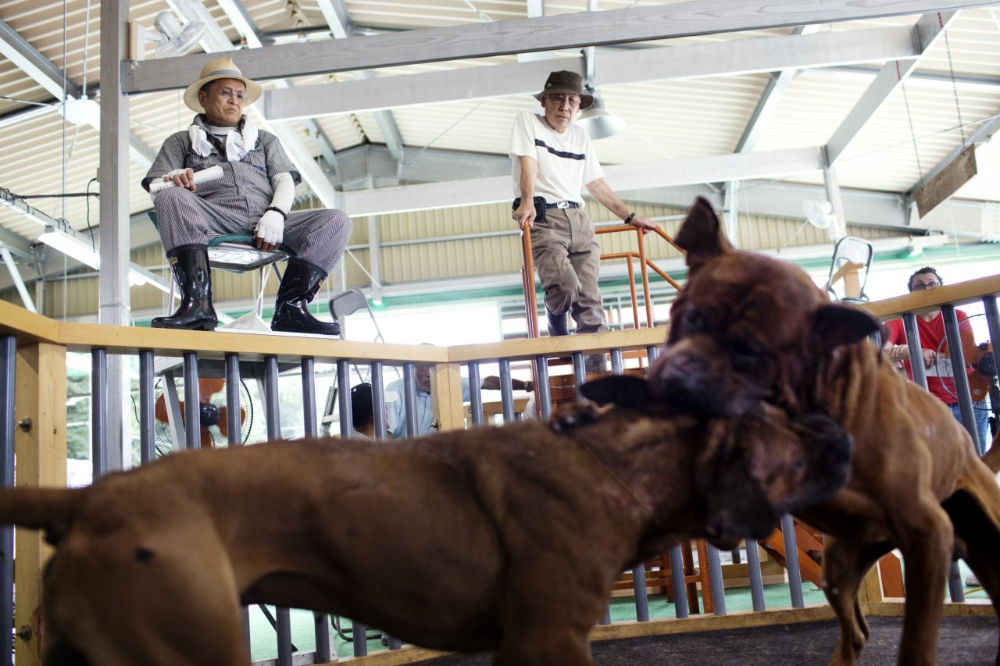

Dog Fighting
Dog fighting is one of the most heinous forms of animal cruelty. Dogs used for fighting are typically raised in isolation, so they spend most of their lives on short, heavy chains. They are regularly conditioned for fighting through the use of drugs, including anabolic steroids to enhance muscle mass and encourage aggressiveness. Dog fighting victims may have their ears cropped and tails docked close to their bodies to minimize the animal’s normal body language cues and to limit areas that another dog can grab during a fight. Fighters usually perform this cropping/docking themselves using crude and inhumane techniques.
Although dog fighting is a felony in all 50 states and the District of Columbia, Guam, Puerto Rico and the U.S. Virgin Islands, it continues to occur in every part of the country and in every type of community. In the past decade, the ASPCA has assisted with approximately 200 dog fighting cases in at least 24 states, and has impacted through rescue, consultations and investigations nearly 5,000 victims of dog fighting.